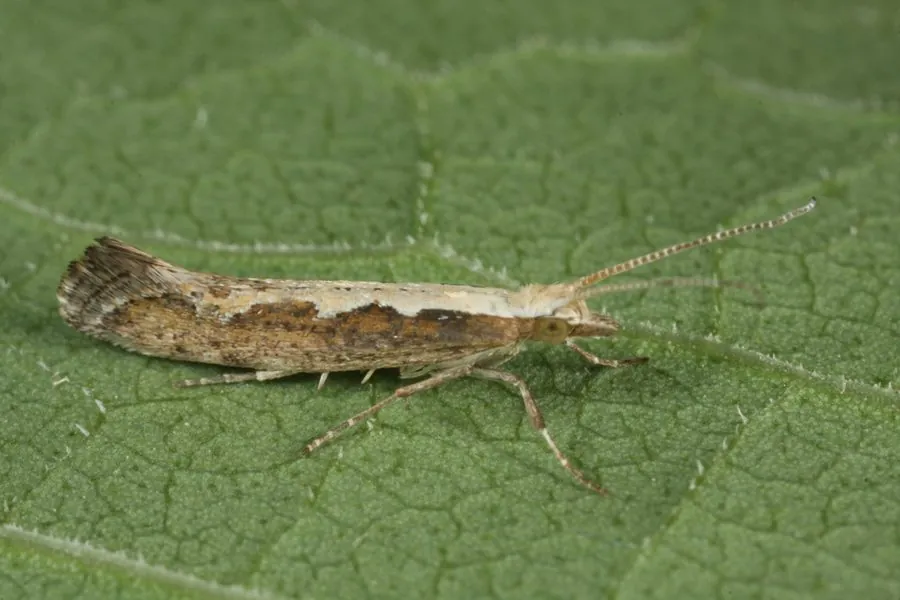

昆虫 · 动物界
小菜蛾 Plutella xylostella

十字花科蔬菜上最常见的小型害虫，幼虫受惊吐丝下垂，繁殖快、抗药性强，是全球性农业害虫。
- 分类
- 门节肢动物门纲昆虫纲目鳞翅目科菜蛾科属菜蛾属
- 栖息环境
- 菜地、菜园和十字花科植物种植区
- 地理分布
- 全球分布，各大陆菜区均有
- 保护级别
- 暂无评估；重大农业害虫
物种志
小菜蛾成虫翅展仅约 1.5–2 cm，前翅灰褐色，停歇时两翅合拢，翅面有黄白色波纹，外形像一个小菱形。幼虫体长约 1 cm，身体细长，淡绿色，行动敏捷，受惊时会吐丝下垂，因此俗称吊丝虫。
它专食十字花科植物，幼虫取食白菜、甘蓝、萝卜、油菜等叶片，造成孔洞和缺刻，严重时叶片被吃成网状。小菜蛾一年发生多代，世代重叠，繁殖速度快，且对多种杀虫剂产生了很强的抗药性，是全球公认的难以防治的农业害虫之一。它分布于世界各地，防治需要结合轮作、防虫网、性诱剂、生物农药和抗性品种，并注意交替用药，避免抗药性进一步加重。
形态与习性
- 食性幼虫取食白菜、甘蓝、萝卜等十字花科叶片
- 翅展成虫约 1.5–2 cm，幼虫约 1 cm
- 识别成虫停歇时像小菱形，幼虫受惊吐丝下垂
- 生活史一年多代、世代重叠，繁殖速度快
- 防治轮作、防虫网、性诱剂、生物农药和交替用药
趣味知识
- 小菜蛾幼虫受惊时会吐丝下垂，所以又叫吊丝虫。
- 它专吃十字花科蔬菜，是菜园里最难缠的害虫之一。
- 小菜蛾抗药性很强，防治时需要轮换使用不同药剂。